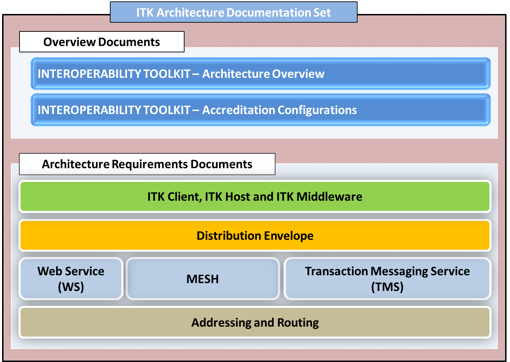

ITK Architecture Documentation - Overview
ITK 2.2 Architecture Documentation Set has been re-organised and re-written to make it simple and easy to understand. This set is intended for a mixed technical audience of individuals within an organisation of all levels intending to develop ITK Accredited Systems, as well as those in the Health and Social Care Architecture communities.
The following diagram shows how the new set of Architecture Documents have been organised and classified. 
The ITK accreditation process has been designed to be very straightforward and deliberately light touch, focusing very much on demonstrating technical conformance of the ITK interface against the relevant specifications and standards. The process is completely independent from both the standards / requirements bodies and the suppliers.